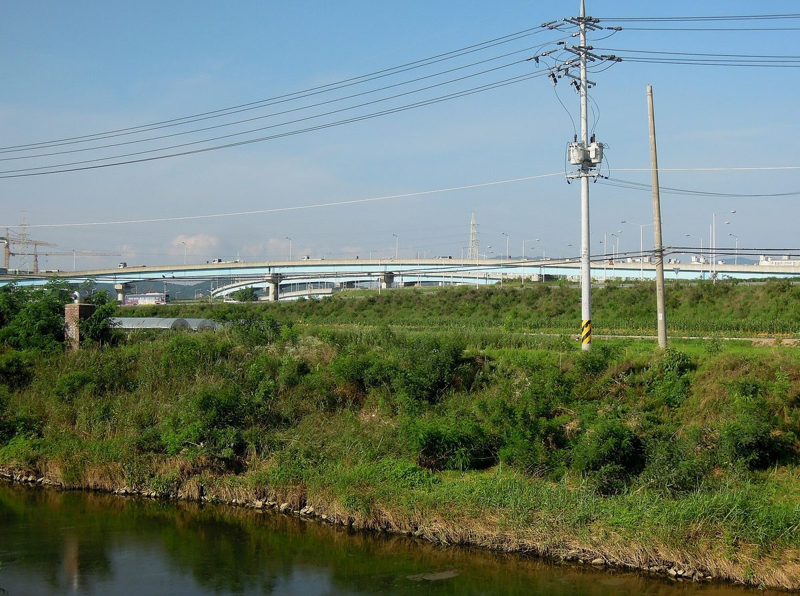

경기 서수원·월암 나들목 유휴부지 2만7,000㎡에 햇빛발전소 준공…협동조합 26곳·도민 1만1,000여 명 참여

2023년 경기RE100 비전 선포 뒤 부지 임대, 2025년 2월 착공…설비 용량·사업비·수익 배분 방식은 공개 안 돼
경기 서수원·월암 나들목 주변 유휴부지에 도민이 참여해 지은 태양광 발전소가 완공돼 5일 경기도의회 대회의실에서 준공식이 열렸다. '서수원·월암 나들목 햇빛발전소'는 고속도로 나들목 주변 약 2만7,000㎡ 부지를 활용한 주민참여형 발전시설로, 도의회는 도내 협동조합 26곳과 도민 1만1,000여 명이 사업에 참여했다고 설명했다. 경기도는 2023년 4월 '경기RE100 비전'을 선포한 뒤 이 부지를 임대했고, 발전소는 2025년 2월 공사를 시작했다. 준공식에는 안명균 경기시민발전협동조합협의회 회장과 주형철 경기도 경제부지사, 염태영 국회의원, 김현수 수원시 제1부시장, 남종섭 경기도의회 의장 등 약 100명이 참석했다. 남 의장은 지나치기 쉬운 나들목 주변 땅이 도민의 참여로 전기를 만들고 지역에 보탬이 되는 공간으로 바뀌었다며, 도민이 직접 참여하고 결실을 나누는 재생에너지 사업을 도의회가 뒷받침하겠다고 말했다. 다만 발전소의 설비 용량과 사업비, 출자 규모, 연간 발전량, 수익 배분 방식은 이날 공개되지 않았다.
시민에너지 관점
고속도로 나들목처럼 쓸모를 찾지 못하던 땅에 협동조합 26곳이 함께 발전소를 세웠다는 것은 시민 출자 발전소가 작은 지붕을 넘어 공공 유휴부지로 커질 수 있음을 보여 준다. 2010년대 초 독일에서는 재생에너지 설비의 절반 가까이를 시민과 농민이 소유했을 만큼, 시민 소유는 보급 속도를 늦추는 것이 아니라 끌어올리는 힘이 됐다. 조합 여러 곳이 나눠 맡으면 운영이 번거롭다는 우려가 나올 수 있지만, 그만큼 수익이 여러 지역 조합원에게 고루 돌아가고 발전소를 지키는 사람도 늘어난다. 경기도와 협의회는 설비 용량과 출자 규모, 수익 배분 방식을 공개해 도민이 성과를 확인할 수 있게 하고, 다른 나들목과 공공 유휴부지에도 같은 방식을 넓혀야 한다.
출처: 이뉴스투데이 2026-11-05 김승희 원문 보기
출처: 경인방송 2026-11-05 이영종 원문 보기
京畿道・西水原・月岩インターチェンジの遊休地2万7,000㎡に太陽光発電所が竣工…協同組合26団体・道民1万1,000人余りが参加
2023年の京畿RE100ビジョン宣言後に用地を賃借、2025年2月着工…設備容量・事業費・収益配分の方法は公表されず
京畿道の西水原・月岩インターチェンジ周辺の遊休地に道民が参加して建てた太陽光発電所が完成し、5日に京畿道議会の大会議室で竣工式が開かれた。「西水原・月岩インターチェンジ太陽光発電所」は高速道路インターチェンジ周辺の約2万7,000㎡の用地を活用した住民参加型の発電施設で、道議会は道内の協同組合26団体と道民1万1,000人余りが事業に参加したと説明した。京畿道は2023年4月に「京畿RE100ビジョン」を宣言した後にこの用地を賃借し、発電所は2025年2月に着工した。竣工式には、アン・ミョンギュン京畿市民発電協同組合協議会会長、チュ・ヒョンチョル京畿道経済副知事、ヨム・テヨン国会議員、キム・ヒョンス水原市第1副市長、ナム・ジョンソプ京畿道議会議長ら約100人が出席した。ナム議長は、見過ごされがちなインターチェンジ周辺の土地が道民の参加で電気を生み、地域の役に立つ空間に変わったとし、道民が直接参加して成果を分かち合う再生可能エネルギー事業を道議会として後押しすると述べた。ただ、発電所の設備容量や事業費、出資規模、年間発電量、収益配分の方法はこの日公表されなかった。
市民エネルギーの視点
高速道路のインターチェンジのように使い道のなかった土地に協同組合26団体が共同で発電所を建てたことは、市民出資の発電所が小さな屋根を超えて公共の遊休地へと広がりうることを示している。2010年代初めのドイツでは再生可能エネルギー設備の半分近くを市民と農家が所有していたほど、市民所有は普及の速度を落とすのではなく押し上げる力となってきた。複数の組合で分担すると運営が煩雑になるとの懸念もありうるが、その分だけ収益が各地の組合員に行き渡り、発電所を支える人も増える。京畿道と協議会は設備容量と出資規模、収益配分の方法を公開して道民が成果を確かめられるようにし、ほかのインターチェンジや公共の遊休地にも同じ方式を広げるべきだ。
出典: イーニューストゥデイ 2026-11-05 キム・スンヒ 原文を読む
出典: 京仁放送 2026-11-05 イ・ヨンジョン 原文を読む
京畿道西水原·月岩立交闲置用地2.7万平方米太阳能电站竣工…26家合作社和1.1万余名道民参与
2023年宣布京畿RE100愿景后租用用地，2025年2月开工…装机容量、项目费用和收益分配方式未公开
京畿道居民参与在西水原·月岩立交周边闲置用地上建设的太阳能电站已经完工，5日在京畿道议会大会议室举行了竣工仪式。"西水原·月岩立交太阳能电站"是利用高速公路立交周边约2万7,000平方米用地建成的居民参与型发电设施，道议会介绍说，道内26家合作社和1万1,000余名道民参与了该项目。京畿道在2023年4月宣布"京畿RE100愿景"后租用了这块用地，电站于2025年2月开工。京畿市民发电合作社协议会会长An Myung-kyun、京畿道经济副知事Joo Hyung-chul、国会议员Yeom Tae-young、水原市第一副市长Kim Hyun-soo、京畿道议会议长Nam Jong-seop等约100人出席了竣工仪式。Nam Jong-seop议长表示，平时容易被忽视的立交周边土地，因道民的参与变成了发电并造福地方的空间，道议会将支持道民直接参与、共享成果的可再生能源项目。不过，电站的装机容量、项目费用、出资规模、年发电量和收益分配方式当天均未公开。
市民能源视角
26家合作社在高速公路立交这样原本派不上用场的土地上共同建起电站，说明市民出资的电站可以从小屋顶扩展到公共闲置用地。2010年代初，德国近一半的可再生能源设施由市民和农民拥有，市民所有并没有拖慢普及速度，反而成为推动力。有人可能担心多家合作社分担会让运营变得繁琐，但这样收益能更均匀地流向各地的社员，守护电站的人也会更多。京畿道和协议会应公开装机容量、出资规模和收益分配方式，让道民能够核实成果，并把同样的模式推广到其他立交和公共闲置用地。
来源: Enews Today（韩国） 2026-11-05 Kim Seung-hee 查看原文
来源: 京仁广播（ifm） 2026-11-05 Lee Young-jong 查看原文
Solar plant completed on 27,000㎡ of idle land at Gyeonggi's Seosuwon and Wolam interchanges, with 26 cooperatives and more than 11,000 residents taking part
The province leased the land after declaring its Gyeonggi RE100 vision in 2023 and work began in February 2025; installed capacity, project cost and revenue sharing were not disclosed
A solar power plant built with the participation of Gyeonggi Province residents on idle land around the Seosuwon and Wolam expressway interchanges has been completed, and a completion ceremony was held on Nov. 5 in the main conference room of the Gyeonggi Provincial Council. The Seosuwon-Wolam Interchange Solar Power Plant is a resident-participation facility that uses about 27,000㎡ of land around the interchanges, and the council said 26 cooperatives in the province and more than 11,000 residents took part in the project. Gyeonggi Province leased the land after declaring its Gyeonggi RE100 vision in April 2023, and construction began in February 2025. About 100 people attended the ceremony, including Ahn Myung-kyun, chair of the Gyeonggi Council of Citizen Power Cooperatives, Vice Governor for Economic Affairs Joo Hyung-chul, lawmaker Yeom Tae-young, Suwon First Deputy Mayor Kim Hyun-soo and Provincial Council Chair Nam Jong-seop. Nam said land around the interchanges that people usually pass by had become a place that generates electricity and benefits the community thanks to residents' participation, and that the council would back renewable energy projects in which residents take part directly and share the results. The plant's installed capacity, project cost, investment size, annual output and revenue-sharing method were not disclosed at the event.
Citizen Energy View
That 26 cooperatives jointly built a plant on land such as an expressway interchange, which had found no use, shows that citizen-financed plants can grow beyond small rooftops onto idle public land. In the early 2010s citizens and farmers owned nearly half of Germany's renewable energy capacity, a sign that citizen ownership speeds deployment up rather than slowing it down. Some may worry that splitting a project among several cooperatives makes it cumbersome to run, but it also spreads the income more evenly among members across the region and gives the plant more people who care for it. Gyeonggi Province and the cooperative council should disclose the capacity, investment size and revenue-sharing method so residents can check the results, and extend the same approach to other interchanges and idle public land.
Source: E-News Today 2026-11-05 Kim Seung-hee Read the original
Source: Kyeongin Broadcasting (ifm) 2026-11-05 Lee Young-jong Read the original